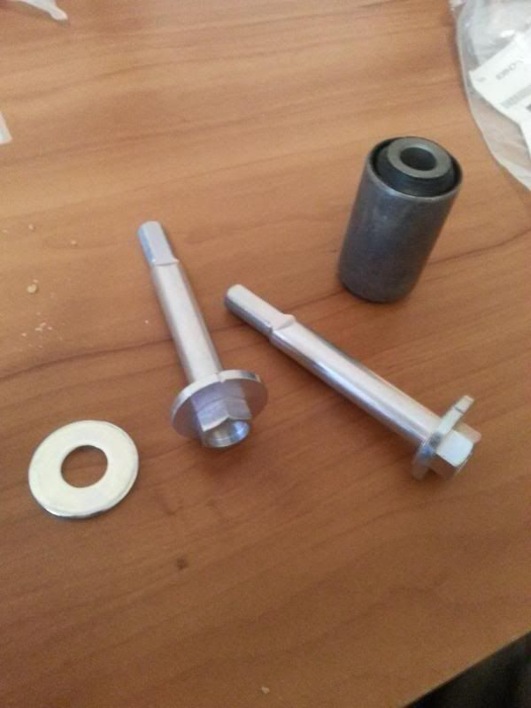

-
So i was reading that these have a tendency to break or get seized. As i'm starting to redoing the entire rear suspension, i ordered new bolts/nuts/washers and bushings (for the metal guide needed to install the urethane ones). When i was looking up the part numbers it listed 2 seperate part numbers for the bolts. Is one bolt a standard bolt and the other the eccentric/cam bolt? or are they both cam bolts? This is what i received today, i only ordered 2 of the bolts, because i wanted to confirm i was getting the right ones.

Now do I need to order another 2 just like these, or is there a different bolt that i need to order? -
Only 2 of the 4 are supposed to be cam bolts, so the sleeves match the bolts -
so are the other 2 just standard bolts? Do all the bolts have issues freezing up or just the cam bolts? -
I think its just the cam one, always the passenger side lol. Put anti seiz in that sucker.Modelli;343560 wrote: so are the other 2 just standard bolts? Do all the bolts have issues freezing up or just the cam bolts?My Build Thread -
Only the cam bolts seem to stick. Not sure why. They do that on everything, not just Nissans. 50% of the alignments I get at work can't be done right because the rear toe adjusters are rusted solid, even on cars as new as 2009.5.3 LSx Z31 -
probably because of the gap the cam bolt creates, allows more dirt/water inside. I didn't have issues with many cam bolts at work, but for the stubborn ones i have an 8lb mini sledge that normally made them cooperate. Only on the older nissan trucks were they a pita. -
Anyone have the p#s for the eccentric bushings, when I look them up it keeps referencing me to the bushings I already have(non eccentric). -
About to do the rear control arm bushings myself. My camber is eating my tires, and I'm hoping the new bushings will keep them tight.__________________________________________________ ___________________
"Aim towards the Enemy." -- Instruction printed on US Rocket Launcher
86 N/A:Rebuilt Autotragic, Cat Delete, PRW-2, Poly Bushings, MSA sway bars, Pioneer HU and Speakers, Sleepy Eyes
Current 0-60: 10.0 flat =[ -
All the bushing are non-eccentric. The entire control arm moves with the eccentric hardware, not the bushing.Modelli;347714 wrote: Anyone have the p#s for the eccentric bushings, when I look them up it keeps referencing me to the bushings I already have(non eccentric).86na - BlueZ
Shiro #366 - Kouki Monster
85t - Mr Tickles

Copyright © 2006–. All rights reserved. Privacy Policy